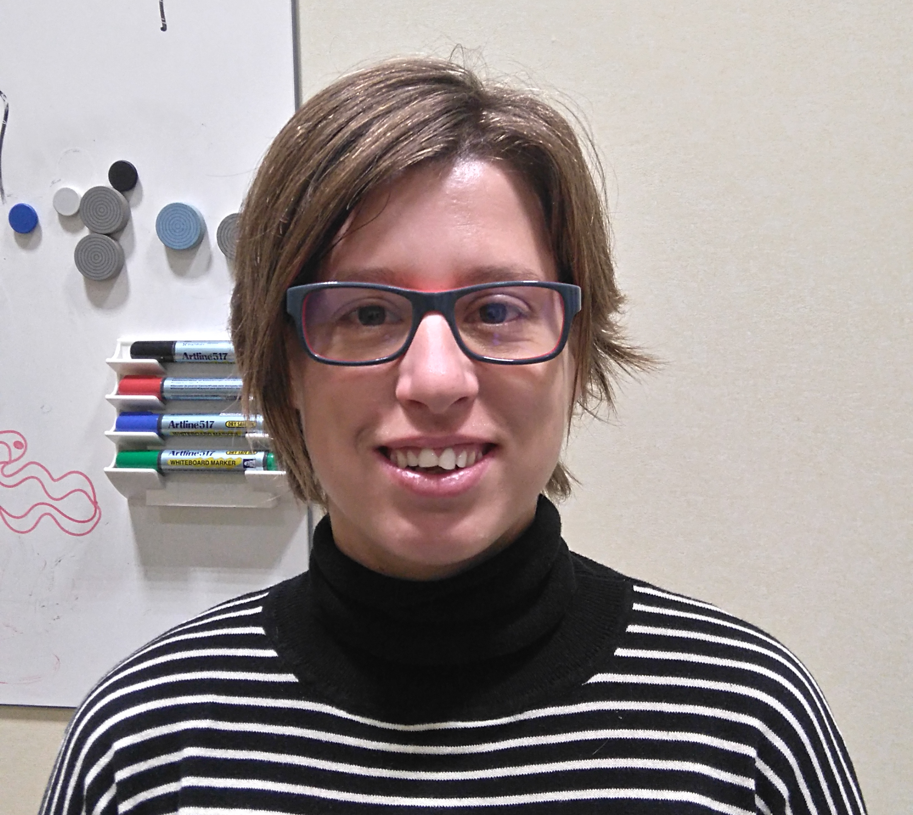

Co-authors


Magí Andorrà
PhD candidate.

Elena H.Martínez-Lapiscina
MD, PhD.

Anna Calvo
MSc.

Erika Lampert
MSc.
The optic radiation (OR) is one of the major components of the visual system and a key structure at risk in white matter diseases such as multiple sclerosis (MS). However, it is challenging to perform track reconstruction of the OR using diffusion MRI due to a sharp change of direction in the Meyer’s loop and the presence of kissing and crossing fibers along the pathway.
✔ We provide an automatic tool to obtain the optic radiation reconstruction including the anterior loop through tractography technique.
✔ This pipeline requires a 3D-structural image and a DWI sequence (single-shell sequence using 60 or more diffusion-encoding gradient directions). It is highly recommended to include a gradient field map sequence.
✔ We present a novel framework based on clustering techniques and anatomical knowledge of optic radiation tract.
✔ The pipeline output directory contains the optic radiation file (format .tck) and the seed and target masks (thalamus and visual cortex).
PhD candidate.
MD, PhD.
MSc.
MSc.